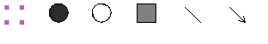

Toolbar

The Toolbar consists of a set of buttons.
The first with 4 small violet squares allows the selection of a node or an edge.
The other buttons allow the insertion of a node or an edge into the graph.